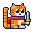
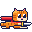

喵喵游戏厅
三个在浏览器里打开就能玩的小游戏，主角都是同一只像素橘猫。一个是动作游戏，另外两个带肉鸽成长和“赌一把”的选择。筹码全是虚拟的，不涉及真钱，也不能兑换。

九命骰局掷 6 颗骰子攒彩池，收手入账，或者再掷一把。按钮上写着这一把爆掉的精确概率。押一条命换双倍，买护符、改骰面，走完 12 夜。开一局 → 招财弹珠投球前先押一个袋子，球在飞的时候还能用猫爪拍它两下。掉进黑袋就清零，被接球猫接住就 ×3。把特殊钉子摆上棋盘，打造自己的得分路线。开一局 →
一喵斩按住瞄准，时间变慢，松手斩过去。斩中就刷新，连斩越多越快。动作游戏 →手机和电脑都能玩。两款赌运气的游戏会自动存档，刷新页面不能反悔；每天还有一局固定种子的“今日局”，同一天打开的骰运或棋运都一样。
这些游戏是怎么来的
美术素材来自开源项目 sprite-gen 生成的像素精灵：橘猫的待机、冲刺、受伤几帧，加上一条鱼和一个猫王。规则、代码、音效和测试都由 Claude Code 完成。音效是用 WebAudio 现场合成的，整套游戏没有一个音频文件，也不依赖任何外部库。
两款肉鸽游戏都把规则引擎（engine.js）和界面（ui.js）分开写。引擎里不碰页面，所以同一份规则既能在浏览器里跑，也能直接在 Node 里跑几千局模拟。随机数状态存在每局的存档对象里，这样刷新页面后接着掷出来的点数不会变。
怎么判断“选择”不是摆设
赌运气的游戏最怕玩家怎么选都差不多，那样所谓的决策只是装饰。开工前定下的合格标准是：会算计的打法要明显赢过无脑打法，做不到就改规则，不靠调数值糊过去。检查方法是写几种不同性格的机器人，让每种各打几百到几千局，比较通关率。
| 《九命骰局》机器人打法（各 2000 局） | 通关率 |
|---|---|
| 按期望决定是否再掷，并会押命 | 35.8% |
| 能再掷就一直掷 | 19.8% |
| 彩池到 300 就收手 | 0.2% |
| 拿到第一口分就收手 | 0.1% |
| 《招财弹珠》机器人打法（各 300 局） | 通关率 |
|---|---|
| 瞄准最好的袋子，并用猫爪拍球 | 30.3% |
| 只瞄准，不拍球 | 11.3% |
| 随机乱投 | 10.0% |
| 从不升级钉子和护符 | 0% |
弹珠的第一版没过这个标准。那时乱投的通关率是 46.7%，认真瞄准是 50.3%，一直往正中间投反而有 57%。原因是钉阵太乱，起手位置几乎影响不了落点。于是加了“球飞行中拍一爪”的操作，同时调了弹性、限制押注上限、收紧了金币，才拉开上表里的差距。
模拟也抓出了几处手玩不容易发现的问题。比如钉子之间原本有一条直通缝，球能一颗钉都不碰就落袋得 0 分，后来把球的半径从 9 加到 11 才堵上。再比如押注最初的赔率是 3.5 倍，贴墙押一个袋子的长期回报能到 1.235，变成了稳赚的刷钱手段，所以改成 3 倍，并按轮数设了上限。
还没验证的部分
- 好不好玩、会不会想再开一局，模拟证明不了。上面的数字只说明决策会影响结果，不代表真人喜欢。
- 机器人的通关率不等于真人的通关率。真人可能更会算，也可能更容易上头。
- 只在 Chromium 里用真实点击跑过完整流程，Safari 和 Firefox 没测过，也没在真机上看过帧率。
- 热度难度、骰局的地狱夜和弹珠的无尽模式，后期平衡没有细测。
如果你玩了，欢迎在下面留言：哪一款更想再开一局，或者卡在了哪一关。